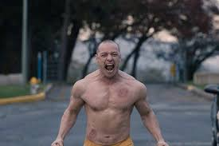

“Glass, His name is Mr.Glass” . Oh how my jaw dropped at the end of Split when Bruce Willis old gravely voice said that line in the diner. Did M. Night Shyamalan pull a fuckin marvel move on me?! He sure did. I waited and I can say I was not disappointed. My first question before the release of glass is. What kind of world is he making here? His own super hero universe maybe? are there reasonable reasons why the beast and Dunn have their powers. I can say, this movie answered those questions and left me wanting more.
SPOILER ALERT! It’s been quite some time since unbreakable was out. Glass takes place some 15yrs after the events of Unbreakable and three weeks after the events of Split. The movie does a good job of explaining what the Dunn family has been up to this whole time. David Dunn now runs a Electronic security store with his son Joseph. They have been working together to fight crime. Since Joseph doesn’t have powers he’s basically his fathers micro. *Punisher reference*. basically he just does computers. David has been dubbed the Overseer by the public. And yes, he still wears the poncho. the movie also established what Wendell Crumb aka “the horde” is up to.

Basically his same old shit. Kidnapping girls and eating them. We see he has kidnapped some cheerleaders and is prepping them for the beast to show up. David runs into Crumb, gets a vision and locates the girls. This leads to a fast showdown between the Overseer and the Beast. Let me tell you, its pretty cool to see these two go at it. To the beast surprise he has met his physical equal. The battle leads to them eventually getting captured by the authorities. They are brought to a special type of insane asylum where no other than Mr.Glass himself resides. This place is also fully equipped to handle thier extraordinary guest.
Mr. Glass is drugged because he’s too smart, David is in a room where if he tries to breakout water will fill the room, and the horde is in a room that if he tries to break out huge lights flash resulting in a different personality forcibly being drawn out. Here they are driven to believe that they are not extraordinary at all. That every feat they accomplished can be proven to be quite ordinary by science. let me tell you, the way the doctor was talking had me convinced they were all just regular people. Excluding Mr.Glass of course, well..because he has proven that he’s just an evil genius. Well to not give the whole movie away they inevitably break out leading to a 3 way showdown between the characters.
Which leads to several revelations as this part of the story wraps up. I won’t ruin those but you get the idea of how the movie went. If you ask me M.Night Shymaman needed this win. His other movies as of late have been hot burning trash so this was back to old form for him. Being a bit geeky i enjoyed watching these heroes and villains fight it out in a real world setting. My only question is what is next for this universe Shymalan built? I guess time will tell.